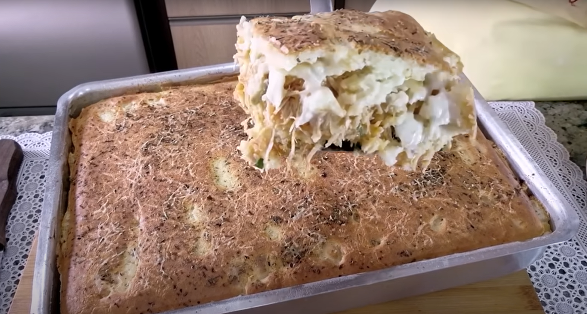

TORTA DE FRANGO (RECEITA CORINGA)

INGREDIENTES PARA A MASSA:
- 4 ovos pequenos ou 3 ovos grandes
- 300ml da água do cozimento do frango
- 150ml de óleo
- 1 colher (chá) ou 5g de sal
- 3 xícaras (220ml) ou 375g de farinha de trigo
- 1 colher (sopa) ou 15g de fermento em pó
INGREDIENTES PARA O FRANGO:
- 1 quilo de filé de frango cozido com sal e desfiado
- 1 cebola pequena picada e 2 dentes de alho triturados
- 3 colheres (sopa) de azeite ou óleo
- Meio sachê de molho de tomate (150g)
- 1 colher (café) de sal
- 1 colher (café) de pimenta-do-reino
- Cheiro-verde a gosto
- Meia lata de milho verde e 100g de azeitonas verdes fatiadas
- 3 colheres (sopa) de requeijão cremoso
MONTAGEM:
- Requeijão cremoso para montagem da torta
- Orégano e queijo parmesão ralado para finalizar
- Forma untada e enfarinhada
- Medidas da forma: 5x24x34cm
- Forno pré-aquecido a 180°C, asse por aproximadamente 40 minutos ou até dourar
MODO DE PREPARO:
CRÉDITOS:
Canal do dono da receita